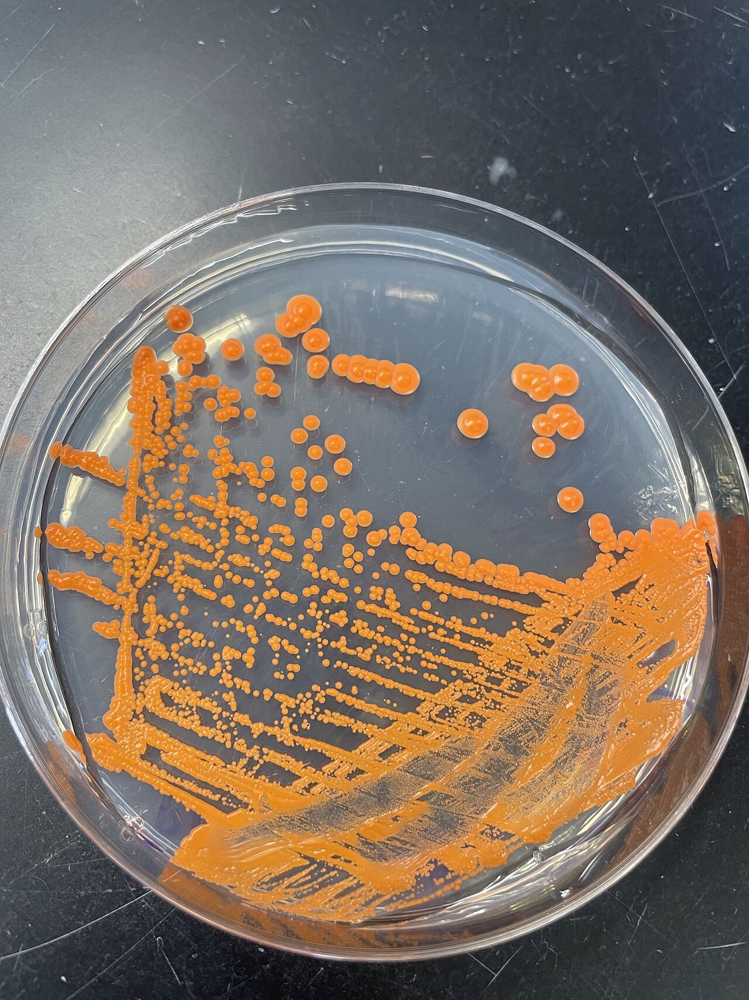

微生物的培养技术（上）：微生物的纯培养
本期导读
微生物的培养技术（上） · 培养基 · 无菌技术 · 平板划线

视频原话 · 导读3 句
- 同学们好！这节课梳理人教版选择性必修三第一章第二节的上半部分——微生物的纯培养。8.7s
- 高考常考培养基的成分和类型、消毒与灭菌的区别，以及倒平板和平板划线的操作细节。8.4s
- 我们按八个考点梳理，每个考点都讲清楚怎么考、怎么做。5.5s
培养基的成分01#
培养基：按照微生物对营养物质的不同需求，配制出的供其生长繁殖的营养基质
水
碳源
氮源
无机盐
| 培养对象 | 特殊要求 |
|---|---|
| 乳酸杆菌 | 添加维生素 |
| 霉菌 | pH 调至酸性 |
| 细菌 | pH 调至中性或弱碱性 |
| 厌氧微生物 | 提供无氧条件 |
易错
自养微生物（如硝化细菌）能利用 CO2，培养基可以不加有机碳源
视频原话5 句
- 考点一，培养基的成分。培养基是人们按照微生物对营养物质的不同需求，配制出的供其生长繁殖的营养基质。11.0s
- 培养基一般都含有水、碳源、氮源和无机盐这四类基本成分。6.5s
- 还要满足微生物对pH、特殊营养物质和氧气的要求。比如培养乳酸杆菌要添加维生素。9.2s
- 培养霉菌时，要把培养基调至酸性；培养细菌时，一般调至中性或弱碱性；培养厌氧微生物要提供无氧条件。11.0s
- 易错：并不是所有培养基都要加有机碳源。自养微生物，比如硝化细菌，能利用CO2，培养基里可以不加有机碳源。12.0s
培养基的类型02#
- 培养基
- 按物理状态
- 液体培养基
- 固体培养基加琼脂等凝固剂
- 按功能
- 选择培养基
- 鉴别培养基
- 按物理状态
琼脂：一种多糖，作凝固剂，一般不被微生物利用
固体：分离、计数、观察菌落
液体：扩大培养、工业生产
选择、鉴别培养基：下期详讲
解题方法
配方中有琼脂就是固体培养基；只允许某一类微生物生长的是选择培养基
视频原话5 句
- 考点二，培养基的类型。按物理状态分，有液体培养基和固体培养基。7.4s
- 在液体培养基中加入琼脂等凝固剂，就制成了固体培养基。琼脂是一种多糖，一般不能被微生物利用。9.8s
- 固体培养基用于微生物的分离、计数和观察菌落；液体培养基常用于扩大培养和工业生产。8.9s
- 按功能分，还有选择培养基和鉴别培养基，下期详细讲。5.9s
- 考法：给出配方判断类型。解题方法：有琼脂就是固体；只能让某一类微生物生长的就是选择培养基。10.2s
消毒与灭菌03#
获得纯培养物的关键：防止杂菌污染（无菌技术）
| 比较项目 | 消毒 | 灭菌 |
|---|---|---|
| 方法 | 较为温和的理化或生物方法 | 强烈的理化方法 |
| 杀死范围 | 物体表面或内部一部分微生物 | 物体内外所有的微生物 |
| 芽孢和孢子 | 一般不能杀死 | 能杀死 |
| 适用对象 | 双手、牛奶、接种室 | 培养基、培养皿、接种工具 |
解题方法
看对象能否耐受：操作者的双手、牛奶等不耐高温的只能消毒；培养基和器具要灭菌
视频原话4 句
- 考点三，消毒和灭菌。获得纯净的微生物培养物，关键是防止杂菌污染，也就是无菌技术。9.2s
- 消毒，是使用较为温和的物理、化学或生物等方法，杀死物体表面或内部一部分微生物。8.6s
- 灭菌，是使用强烈的理化方法，杀死物体内外所有的微生物，包括芽孢和孢子。7.5s
- 解题方法：看对象能不能耐受——操作者的双手、牛奶这类不耐高温的对象只能消毒；培养基、器具要灭菌。10.5s
常用灭菌方法04#
| 对象 | 方法 | 条件 / 说明 |
|---|---|---|
| 接种环、接种针、试管口 | 灼烧灭菌 | 酒精灯火焰 |
| 玻璃器皿、金属用具 | 干热灭菌 | 干热灭菌箱，物品要干燥 |
| 培养基 | 湿热灭菌 | 高压蒸汽：100 kPa、121 ℃、15～30 min |
| 牛奶 | 巴氏消毒 | 较低温度处理，营养成分基本不被破坏 |
| 操作者双手 | 化学药剂消毒 | 酒精擦拭 |
| 接种室、超净工作台 | 紫外线照射 | 物理消毒 |
易错
培养基不能用干热灭菌（含水）；玻璃器皿要先干燥再干热灭菌；红色是灭菌，绿色是消毒
视频原话5 句
- 考点四，常用的灭菌和消毒方法。接种环、接种针、试管口，用灼烧灭菌。8.2s
- 玻璃器皿和金属用具，用干热灭菌，放在干热灭菌箱中。5.8s
- 培养基，用湿热灭菌，最常用的是高压蒸汽灭菌，在 100 kPa、121 ℃ 下维持 15～30 min。10.7s
- 消毒方法有：牛奶用巴氏消毒法，双手用酒精擦拭，接种室用紫外线照射。8.0s
- 易错：培养基不能用干热灭菌，因为它含水；玻璃器皿要先干燥再干热灭菌。7.9s
纯培养的步骤05#
纯培养物：由单一个体繁殖所获得的微生物群体
配制培养基
→
灭菌
→
倒平板
→
接种
→
分离
→
培养
菌落：分散的微生物在固体培养基上繁殖形成的、肉眼可见的、有一定形态结构的子细胞群体
易错
顺序是先灭菌、后倒平板；倒好的平板不能再灭菌
视频原话4 句
- 考点五，微生物纯培养的步骤。由单一个体繁殖所获得的微生物群体，叫作纯培养物。8.7s
- 步骤是：配制培养基、灭菌、倒平板、接种、分离和培养。6.4s
- 分散的微生物在固体培养基上繁殖，形成肉眼可见的、有一定形态结构的子细胞群体，叫作菌落。9.4s
- 考法：排序题。易错：是先灭菌、后倒平板，倒平板之后不能再灭菌。8.0s
倒平板06#
考法
平板为什么要倒置？防止皿盖上的冷凝水落入培养基造成污染（也能减少培养基中水分的蒸发）
视频原话4 句
- 考点六，倒平板。等培养基冷却到 50 ℃ 左右，在酒精灯火焰附近操作。8.0s
- 用左手打开培养皿盖的一条缝隙，右手把培养基倒入培养皿，立刻盖上皿盖。7.4s
- 等培养基冷却凝固后，把平板倒过来放置，使皿盖在下、皿底在上。6.9s
- 考法：问平板倒置的原因。答：防止皿盖上的冷凝水落入培养基，造成污染。8.2s
平板划线法07#
连续划线，把菌种逐步稀释分散，得到单菌落
从上一次划线的末端开始；最后一区不与第一区相连
第一次灼烧：杀死接种环上原有的微生物
每次划线前灼烧：使菌种都来自上次划线的末端
划线结束灼烧：防止污染环境、感染操作者
灼烧后冷却再划线，以免烫死菌种
解题方法
划了 N 个区域，接种环就要灼烧 N + 1 次（图中 4 个区域，灼烧 5 次）
视频原话6 句
- 考点七，平板划线法。用接种环在固体培养基表面连续划线，把聚集的菌种逐步稀释分散，最终得到由单个细胞繁殖成的菌落。12.7s
- 第二次及以后的划线，都要从上一次划线的末端开始，最后一区不要与第一区相连。7.7s
- 接种环每次划线前后都要灼烧：第一次灼烧，杀死环上原有的微生物。6.9s
- 每次划线之前灼烧，是杀死上次残留的菌种，使每次划线的菌种都来自上次划线的末端。8.6s
- 划线结束后灼烧，是防止菌种污染环境和感染操作者。灼烧后要冷却再划线，以免烫死菌种。9.6s
- 考法：灼烧次数。解题方法：划了 N 个区域，接种环就要灼烧 N + 1 次。7.8s
酵母菌的纯培养08#
马铃薯琼脂培养基
→
灭菌
→
倒平板
→
平板划线接种
接种的平板
倒置，放入恒温培养箱中培养
未接种的平板（对照）
同样条件培养
长出菌落 → 培养基被污染
菌落特征：形状、大小、隆起程度、颜色 → 鉴别菌种
考法
设置未接种平板的目的？检验培养基是否被污染，即灭菌是否合格
视频原话5 句
- 考点八，实验：酵母菌的纯培养。步骤：制备马铃薯琼脂培养基、灭菌、倒平板，再用平板划线法接种。10.9s
- 把接种后的平板和一个未接种的平板一起倒置，放入恒温培养箱中培养。6.9s
- 未接种的平板是对照：如果它上面也长出菌落，说明培养基被污染了。6.8s
- 观察菌落时，看它的形状、大小、隆起程度和颜色。不同微生物的菌落特征不同，可以用来鉴别菌种。10.0s
- 考法：问设置未接种平板的目的。解题方法：答“检验培养基是否被污染”，也就是灭菌是否合格。10.1s
易错速查✓
先自己判断，再点按钮查看对错与解析。
- 1培养基中都必须含有机碳源说法错误：自养微生物的培养基可不含有机碳源
- 2琼脂是凝固剂，一般不能被微生物利用说法正确。
- 3消毒能杀死物体内外所有微生物说法错误：那是灭菌；消毒只杀死部分微生物
- 4培养基常用高压蒸汽灭菌说法正确。
- 5平板划线时只在开始前灼烧接种环说法错误：每次划线前后都要灼烧
- 6平板倒置可防止冷凝水滴落造成污染说法正确。
无菌贯穿始终，灼烧前后都要做！
视频原话 · 易错速查5 句
- 最后，用六道判断题检验一下。3.6s
- 判断一：培养基都必须含有机碳源？错，自养微生物可以不加。判断二：琼脂是凝固剂，一般不被微生物利用？对。12.4s
- 判断三：消毒能杀死物体内外所有微生物？错，那是灭菌。判断四：培养基常用高压蒸汽灭菌？对。11.5s
- 判断五：平板划线只在开始前灼烧接种环？错，每次划线前后都要灼烧。判断六：平板倒置可防止冷凝水滴落造成污染？对。14.3s
- 八个考点串成一条线：无菌贯穿始终，灼烧前后都要做。我们下期再见！7.5s
图片来源
图片来源：Wikimedia Commons —— Awkwafaba《Phaffia rhodozyma on PDA plate 01》CC BY-SA 4.0
Photo: Awkwafaba, CC BY-SA 4.0